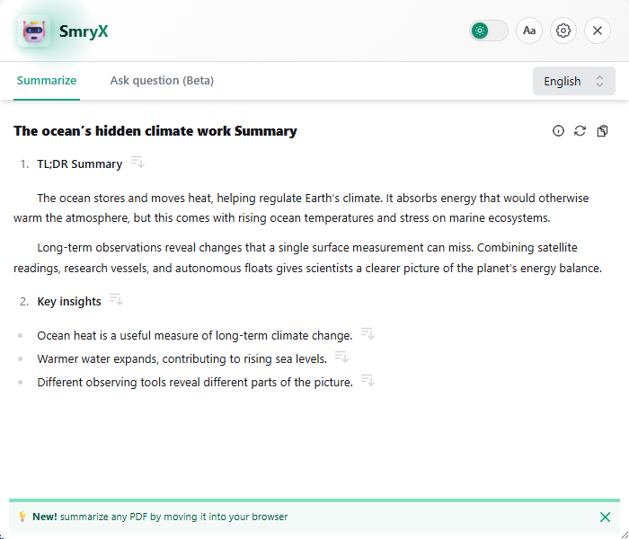

Meet the page.
Click SmryX, use Generate Summary on a video, or highlight a passage for the floating glass action.
YOUR BROWSER, IN FOCUS
Good ideas get buried in long pages.
SmryX helps you find them, question them,
and keep them together.
Chrome & Chromium · Safari source for Mac, iPhone & iPad
Works with your signed-in ChatGPT session.

FROM THE THINGS YOU ALREADY READ
WebpagesCaptioned videosPDFs & textYour open tabs01 / A SHORTER PATH TO THE POINT
Stay with the page you’re reading. Get a useful overview, then follow your curiosity.
Why the ocean matters to a warming planet
The ocean absorbs heat and carbon dioxide, slowing warming on land. That protection comes with consequences: warmer water, rising seas, and greater stress on marine ecosystems.
Measuring ocean change gives scientists a clearer view of the planet’s energy balance. The practical takeaway is to track long-term patterns alongside the events we see at the surface.
A longer reading, with more to unpack.
The ocean is a central part of Earth’s climate system. It stores and moves heat, exchanges gases with the atmosphere, and shapes weather patterns far beyond the coast. These processes occur on different timescales, making long-term observations essential.
As greenhouse gases increase, ocean heat content rises. Water expands as it warms, contributing to sea-level rise alongside melting land ice. Marine organisms also face changing temperatures and chemistry. A single surface reading cannot capture all of these changes.
Scientists combine satellites, research vessels, and autonomous floats to build a more complete picture. The observations help connect everyday conditions with the larger energy balance of the planet.
Click SmryX, use Generate Summary on a video, or highlight a passage for the floating glass action.
Long sources are read in sections, then combined into one summary. Choose your language and summary instructions.
Ask a follow-up question about the source without losing the context that brought you there.
02 / FOR THE TABS YOU MEANT TO READ
Give your open tabs a place to land. Batch summaries keeps the page, its link, and its TL;DR together in one full-size workspace.
Build your first queue ↗
Your order, preserved.Summarize tabs in their browser order. Add another page while the queue continues.
Pick it up later.Export a session, import unfinished work, and resume the pages still waiting.
Keep a way back.Original source links stay with every result. Closing source tabs is optional and off by default.
03 / NOTHING MYSTERIOUS
SmryX uses the ChatGPT interface you already sign in to. No API key or model menu. ChatGPT’s usage limits and availability still apply.
Extension feature-use statistics are on by default, with an off switch in setup and Settings. Extension events exclude page URLs, source text, summaries, questions, and ChatGPT credentials. Website visit analytics runs only after you allow it, with a separate choice in the footer. The source is public, so you can see how it works.
Read the privacy details ↗A FEW THINGS TO KNOW
Download the source from GitHub, unzip it, and use Load unpacked on Chrome’s Extensions page with Developer mode enabled. The install guide walks you through it. A Chrome Web Store listing is not available here.
It processes all of the extracted text in sections before writing one final summary. Text behind a paywall, not loaded by the page, or unavailable in a video transcript cannot be included. Always check the source when accuracy matters.
The repository includes Safari source for macOS and iOS/iPadOS, with portrait-first layouts and a Share action. Building and signing requires a Mac with Xcode. It is not a one-click App Store installation.
No. SmryX is an independent project. ChatGPT is a trademark of OpenAI. A working signed-in ChatGPT session is required.
YOUR NEXT GOOD IDEA IS IN THERE SOMEWHERE.
Start with one page. See where it takes you.